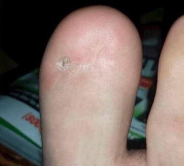
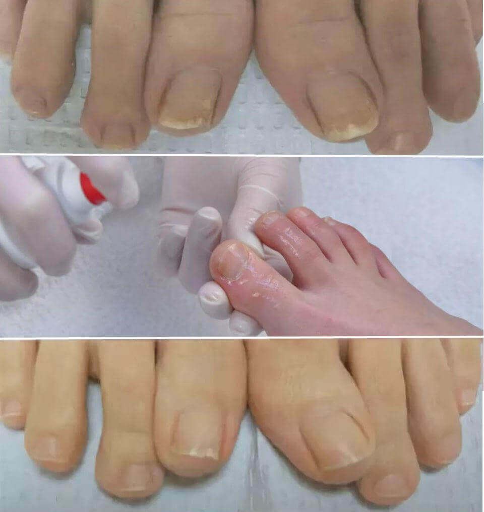

"I metodi di trattamento di micosi in Italia sono ridicoli" — l'intervista con un dermatologo tedesco.


Un mese fa Leo Hindenburg è arrivato in Italia per studiare l'esperienza dei suoi colleghi italiani. Quello che ha visto in Italia ha scatenato un'ondata di emozioni negative tra gli specialisti tedeschi. Nel nostro paese le persone affette dalle infezioni fungine non vengono trattate, ma diventano le vittime di reti farmaceutiche.
Dopo il discorso svolto in Germania, Leo Hindenburg ha accettato di dare un'intervista ad un canale televisivo italiano. Cosa non è piaciuto a un famoso medico tedesco nei metodi italiani contro le infezioni fungine? Perché ritiene che in Italia i malati non importano a nessuno?
Corrispondente: Ha detto ai giornalisti tedeschi che quello che ha visto in Italia è scioccante. Può commentare?
Leo Hindenburg: Vorrei dire fin dall'inizio che rispetto molto l'Italia, la cultura italiana e i cittadini italiani. Ma i metodi usati dagli specialisti italiani per trattare le infezioni fungine sono scioccanti per i medici tedeschi. La vostra medicina ha gli obbiettivi completamente diversi. Almeno nell'ambito della dermatologia.
Sapete benissimo quali farmaci prescrivono i medici italiani per curare la micosi.
Però qualsiasi medico in Europa vi dirà che questi medicinali non possono trattare il fungo. Non sono in grado di farlo. L'inefficacia di questi prodotti è stata dimostrata molto tempo fa! Tutto quello che possono fare è nascondere i sintomi esterni in diversi modi. E lo facciano solo per un periodo brevo. Quando l'azione del farmaco finisce, l'infezione "esce da dentro". I pazienti italiani sono costretti a usare questi medicinali costantemente.
Sarete sorpresi ma in altri paesi europei questi metodi di trattamento di micosi non si usano per più di 5-7 anni. Li usiamo solo nei casi rarissimi: quando è necessario rapidamente nascondere le manifestazioni esterne del fungo.
Perché la situazione è così diversa? La mia spiegazione è che i medici italiani non sono interessati ad aiutare i propri pazienti. Va capito che è molto più redditizio vendere regolarmente i farmaci e guadagnare sui pazienti che aiutarli a sbarazzarsi dal disagio.
Per quanto ne so, in Italia i pazienti con micosi possono ricevere i farmaci gratuiti che, però, sono estremamente difficili da ottenere. Il motivo? L'Italia non ha abbastanza farmaci?
Ogni settimana sulla tv si parla della vostra mafia farmaceutica, ma non c'è nessuno che fa qualcosa per sconfiggerla. Il motivo? Credo che lo sappiate. Per i produttori dei farmaci i malati sono i sacchi di denaro!
Corrispondente: Come vanno le cose con il trattamento della micosi in Germania?
Leo Hindenburg: Quasi tutti i pazienti in Germania si sentono sani, mentre circa 60% degli ex portatori di infezioni fungine ritornano a una vita normale senza le conseguenze gravi. I fungi non li disturbano più. È dovuto a un approccio completamente diverso.
Quando ho visto le statistiche mediche in Italia, sono rimasto scioccato. Lo sapevate che in Italia le funzioni fungine sono al terzo posto tra le cause del cancro, mentre al primo e al secondo posto sono la predisposizione genetica e il sovrappeso? I malati di micosi muoiono in giovane età, l'80% non vive fino a 60 anni!
Corrispondente: È vero che in Italia non ci sono i prodotti che aiutano davvero a sbarazzarsi dei funghi?
Leo Hindenburg: In Italia, come in tutta Europa, ci sono i rimedi efficaci per la micosi. In Italia è . è stato creato da specialisti italiani nel 2015. Si tratta di una crema, quindi è molto facile da applicare. La maggior parte dei pazienti si sbarazzano da tutti i sintomi della micosi già tra un mese!
Nella sua composizione ci sono i componenti naturali che influenzano rapidamente i focolai di infezione. Per dimostrarlo, vi racconterò di diverse sostanze presente nella sua formula e le loro azioni nella lotta contro il fungo.
| Nome della sostanza | Effetto |
| Acido salicilico | Elimina papillomi e verruche sulla pelle. Ha un effetto antinfiammatorio |
| Zolfo | Le proprietà antisettiche dello zolfo consentono di sopprimere batteri, virus |
| Olio di tea tree | Ha una vasta gamma di proprietà antivirali, antibatteriche e antifungine |
Corrispondente: è in vendita nelle farmacie italiane?
Leo Hindenburg: No. Comunque, i dermatologi italiani (almeno quelli che sono interessati ai metodi progressivi) sono consapevoli dell'efficacia di .
Per quanto ne so, il produttore di voleva entrare nel mercato farmaceutico italiano. Ma non era fortunato. Come ho già detto, in Italia non è proficuo aiutare i pazienti con la micosi. L'ambito farmaceutico è un business! Perfino in Germania. In Germania, tuttavia, si tratta di un business onesto (le condizioni di persone migliorano), ma in Italia — no!
Corrispondente: Quali consigli può dare alle persone che soffrono della micosi in Italia?
Leo Hindenburg: La malattia colpisce di solito le persone comuni, specialmente quelle che hanno "più di 50 anni". Per fortuna, una soluzione esiste. Al momento, il laboratorio dermatologico offre a tutti che ne hanno bisogno uno sconto su . Gli specialisti del laboratorio hanno creato una formula speciale e il produttore ha fornito il lotto necessario del rimedio. Pertanto, ora qualsiasi residente d'Italia può ordinare con uno sconto del 50%.
Corrispondente: Per quanto tempo il prezzo di questa crema sarà ridotta?
Leo Hindenburg: Fino alla fine di questo lotto. Ma voglio avvertirvi che le confezioni a cui si applica lo sconto stanno per finire. Sempre più persone ordinano questa crema. Probabilmente i pazienti italiani scoprono la sua maggiore efficacia rispetto ai farmaci antifungini tradizionali.
Commenti
-
 Chiara PalumboSo già di questa crema, l'ho usata nel 2017! Mi sono sbarazzata del fungo!14.09.2020 | Mi piace | Rispondi
Chiara PalumboSo già di questa crema, l'ho usata nel 2017! Mi sono sbarazzata del fungo!14.09.2020 | Mi piace | Rispondi -
Paolo F.la micosi mi tormentava per circa 20 anni, ho perso quasi tutte le mie unghie!!! Domani riceverò nell'ufficio postale! È la mia ultima speranza!!!14.09.2020 | Mi piace | Rispondi
-
 Bianca23Chi l'ha ordinato? Vi chiedo di esprimere la vostra opinione.14.09.2020 | Mi piace | Rispondi
Bianca23Chi l'ha ordinato? Vi chiedo di esprimere la vostra opinione.14.09.2020 | Mi piace | Rispondi -
Adriano SorrentinoL'ho ricevuto ieri. Non potevo credere di aver ricevuto uno sconto del 50%. Pensavo fosse solo per attirare i clienti. La crema è già da me (ho iniziato ad applicarla), ho pagato esattamente la metà del prezzo.15.09.2020 | Mi piace | Rispondi
-
 Tiziano L.Ha detto bene l'obbiettivo principale dei medici italiani. Vogliono solo guadagnare! Non riceviamo i farmaci ai prezzi agevolati, e invece nelle farmacie si possono trovare tante cose inutili. Acquista e sii felice!!! Totale indifferenza. Peccato che io non possa andare in Germania. Grazie per le informazioni utili.15.09.2020 | Mi piace | Rispondi
Tiziano L.Ha detto bene l'obbiettivo principale dei medici italiani. Vogliono solo guadagnare! Non riceviamo i farmaci ai prezzi agevolati, e invece nelle farmacie si possono trovare tante cose inutili. Acquista e sii felice!!! Totale indifferenza. Peccato che io non possa andare in Germania. Grazie per le informazioni utili.15.09.2020 | Mi piace | Rispondi -
Valentina B.Dopo 5 giorni di utilizzo è scomparso l'odore sgradevole dei piedi! Non mi vergogno più di indossare i sandali.15.09.2020 | Mi piace | Rispondi
-
 GiovanniHo letto i commenti... ho fatto un ordine. sto aspettando la chiamata.15.09.2020 | Mi piace | Rispondi
GiovanniHo letto i commenti... ho fatto un ordine. sto aspettando la chiamata.15.09.2020 | Mi piace | Rispondi -
 Silvia MartinelliMia figlia è adolescente e ha un fungo (è stata infettata in piscina). Una amica mi ha consigliato , ma ho avuto dei dubbi. Ora ci proveremo sicuramente.15.09.2020 | Mi piace | Rispondi
Silvia MartinelliMia figlia è adolescente e ha un fungo (è stata infettata in piscina). Una amica mi ha consigliato , ma ho avuto dei dubbi. Ora ci proveremo sicuramente.15.09.2020 | Mi piace | Rispondi -
Raffaela CastagniniCrema??? la proverò!!!!!!16.09.2020 | Mi piace | Rispondi
-
 Alessio P.È molto efficace.16.09.2020 | Mi piace | Rispondi
Alessio P.È molto efficace.16.09.2020 | Mi piace | Rispondi -
 Francesca CostaHo avuto la micosi da 15 anni, mi ha portato un sacco di complessi! Un mese fa ho ricevuto . Il dermatologo è sorpreso di vedere i risultati dei test, il fungo è quasi scomparso. Grazie!16.09.2020 | Mi piace | Rispondi
Francesca CostaHo avuto la micosi da 15 anni, mi ha portato un sacco di complessi! Un mese fa ho ricevuto . Il dermatologo è sorpreso di vedere i risultati dei test, il fungo è quasi scomparso. Grazie!16.09.2020 | Mi piace | Rispondi